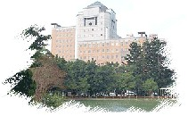

2007台大物理營
About 台大物理營...
自民國八十七年台大物理系學會首次舉辦物理營以來，即將邁入第十個年頭。初次舉辦物理營的目的，
在於希望打破外界對於讀物理系僅止於教書或研究的傳統刻板印象。經過歷屆的台大物理營，我們成功
地向高中生介紹物理各領域的蓬勃發展，並展現物理學獨特迷人的一面。我們的努力成效卓著，台大物
理營在全國高中生中已成為口耳相傳的熱門營隊。
九十學年度我們正式遷入樓高 14 層的「物理學系所暨凝態 研究中心新館」，在教學及研究設備上將擁有更多的資源。希望以新館優越的硬體設備和學習環境，讓 2007 台大物理營呈現嶄新的風貌。 <TOP>
物理營活動行程
活動日期： 2007/2/5 (一)
~ 2007/2/9 (五)
招生對象： 全國高中學生
招生人數： 100人，原則上50男50女
(若報名人數超過 100 人，經篩選後於本網頁公布錄取名單)
主辦單位： 國立台灣大學物理學系系學會
活動地點： 國立台灣大學物理學系暨凝態中心
住宿地點： 國立台灣大學新體育館集訓中心
《注意：本次活動一律採集中住宿方式，不得單獨外宿》
活動費用： 4500 元整
報名方法： 網路報名 (即日起至 2006/12/24 截止) <TOP>